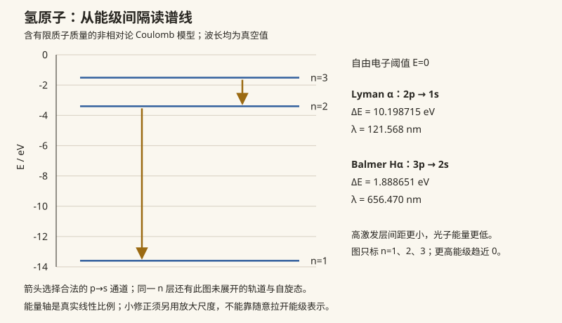

本页目录
近代物理 · 原子、光谱与核
对标：任意近代物理教材（Krane 级） ｜ 前置：qm-03/04、sm-03 一页拼图课：把量子力学的成果落到三块实地——原子与光谱（谱线是量子数的条形码）、激光（受激辐射的工程化）、原子核与放射性（结合能曲线一张图讲清裂变聚变）。定位是"物理世界观的完整性"，推导密度低于前四页、以机制与数量级为主。
学习层：一条谱线里哪些是定理，哪些只是模型的刻度？
1. 具体谜题：从波长反推能级，但不要把反推当成完整原子学
光谱仪给出的是光子波长 \(\lambda\)；在一个确定的量子模型内，能量守恒把它接到能级差：\(E_\gamma=hc/\lambda=E_{n_i}-E_{n_f}\)。对单电子、球对称 Coulomb 势，Schrödinger 方程的束缚态给出
其中 \(\mu=m_eM/(m_e+M)\) 是电子与核的约化质量。这个公式在它的氢样模型里很强；它不是对多电子屏蔽、核自旋、辐射修正和实验线宽的全包办。
2. 先预测：三道观察题先锁住
- 氢原子中 \(3\to2\) 与 \(2\to1\) 哪一条线波长更长？
- 把同一跃迁的质子核换成更重的氘核，约化质量增大后，模型波长会略变长还是略变短？
- 电偶极（E1）跃迁若 \(\Delta\ell=0\) 或 \(|\Delta m|=2\)，仅仅因为上下能级不同，是否就足以成为同一近似下的允许线？
下面实验揭示前只保留这三项预测。揭示后的能级图、有限精度和修正条形是当前公式与当前参数的诊断读数；它们不是对完整原子 Hamiltonian 或一次实验测量的证明。
3. Rydberg 账本：谱系由能级差而不是绝对能级决定
在 \(Z=1\)、无限重核近似下，\(2\to1\) 的 Lyman-\(\alpha\) 线约 \(121.6\ \mathrm{nm}\)，\(3\to2\) 的 Balmer-\(\alpha\) 线约 \(656.3\ \mathrm{nm}\)。后者更长，是因为高激发层之间的能级差更小。有限核质量只把 \(R_\infty\) 乘上 \(\mu/m_e\)；氢与氘的差异很小，但可被高分辨率光谱读出，正是“同一个模型参数如何留下可测指纹”的例子。
选择定则来自跃迁矩阵元而非能级差本身。球对称基底和电偶极近似下
满足规则只表示 E1 矩阵元可能非零；还要有合法量子数、上下能级顺序和非零径向积分。违反规则的通道在 E1 近似下禁戒，但磁偶极、电四极、多电子组态混合或外场可以打开更弱的通道。
4. 修正的尺度：有用的数量级不等于完整分裂
对氢样离子，精细结构的典型相对尺度为 \((Z\alpha)^4\)；一个便于量级比较的写法是
它把相对论动能、自旋–轨道和 Darwin 项的共同尺度说清楚，却没有给出依赖 \(j,\ell\) 的完整系数，更没有包含 Lamb shift 或超精细结构。弱外磁场下，Zeeman 一阶项可写成
当场足够强以至于好量子数重组、或出现 Paschen–Back 混合时，这个线性项不再是完整答案。实验台因此把红色读数命名为“尺度”，而不是“精确修正后的谱线”。
无 JavaScript 时的静态读法：默认取氢、\(Z=1\)、Balmer-\(\alpha\)（\(3p\to2s\)）、\(B=0\)。氢样约化质量公式给 \(\lambda\approx656.47\ \mathrm{nm}\)；改为氘后同一模型的波长略短。Lyman-\(\alpha\) 的波长约 \(121.57\ \mathrm{nm}\)，明显短于 Balmer-\(\alpha\)。选择定则账本中 \(\Delta\ell=+1,\Delta m=0\) 记为 E1 允许；\(\Delta\ell=0\) 或 \(|\Delta m|=2\) 记为 E1 禁戒。精细结构与 Zeeman 数值只作为数量级和弱场线性诊断，不能当作完整原子计算。
| 账本 | 模型内读法 | 有限实验给出的证据 | 明确边界 |
|---|---|---|---|
| Rydberg 线 | \(1/\lambda=R_MZ^2(1/n_f^2-1/n_i^2)\) | 当前跃迁的波长与光子能量 | 单电子、Coulomb、束缚态模型 |
| 约化质量 | \(R_M=R_\infty\mu/m_e\) | H/D 同线的微小相对位移 | 核质量输入为近似，未拟合全部同位素效应 |
| E1 选择定则 | \(\Delta\ell=\pm1,\Delta m=0,\pm1\) | 当前通道标为允许/禁戒 | 禁戒 E1 不等于所有多极过程绝对无谱线 |
| 精细结构 | \((Z\alpha)^4\) 数量级 | 当前 \(Z,n\) 的尺度条 | 不是精确 \(j\) 分裂、Lamb 或超精细计算 |
| Zeeman | \(\mu_Bg_Jm_JB\) 弱场线性项 | 当前 \(B\) 的一阶移位 | 强场混合需重解 Hamiltonian |
5. 定理、模型和测量的边界
- 模型内精确：在单电子、静态 Coulomb、非相对论 Schrödinger 模型中，能级差与 Rydberg 公式是该模型的解析结果；约化质量是把有限核质量纳入二体相对坐标后的模型修正。
- 近似尺度：精细结构和弱场 Zeeman 项只展示首阶/数量级结构；完整原子计算还要指定相对论 Hamiltonian、核自旋、辐射场、外场强度与耦合基底。
- 选择定则：它们是给定对称性、偏振和多极近似下的矩阵元规则；“允许”不等于强度相同，“禁戒”不等于在所有机制下绝对不可见。
- 测量边界：真实谱线还受到 Lamb/超精细位移、同位素核结构、碰撞与 Doppler 展宽、仪器响应和多电子屏蔽影响。有限 SVG、舍入波长和一组 \(B\) 值只能诊断公式，不能冒充实验拟合。

1. 原子光谱：量子数的条形码
谱线 = 能级差（qm-01 例 3 的 Bohr 频率）；选择定则 \(\Delta\ell = \pm1, \Delta m = 0,\pm1\)（qm-04 矩阵元对称性）筛掉大部分组合——光谱既是元素指纹也是量子数的直接读数（天体成分全靠它：恒星光谱分类、宇宙红移测量的底层）。多电子原子：屏蔽 + 自旋轨道给复杂谱系（碱金属像"带修正的氢"——最外层单电子）；X 射线特征谱（内层空穴跃迁，Moseley 定律 \(\sqrt\nu \propto Z\)——元素序数的实验定义，周期表排序的终审判决）。
磁场中的谱线：Zeeman 分裂（qm-03 的 \(m\) 简并解除）\(\Delta E = \mu_Bg_JmB\)——测天体磁场的手段；Stern–Gerlach、NMR（qm-03 例 2）同族。
2. 激光：受激辐射的工程
Einstein 三系数（qm-04 黄金规则 + Planck 分布的自洽推论）：自发辐射 \(A\)、受激辐射/吸收 \(B\)——受激辐射的光子与激励光子同频同相同向（相干放大的种子）。
激光三要素：① 粒子数反转（\(N_{\text{上}} > N_{\text{下}}\)——热平衡永远做不到（Boltzmann 因子），须泵浦 + 三/四能级结构绕开）；② 增益介质；③ 光学谐振腔（模式选择 + 反馈——驻波条件挑单色性）。产物：相干（干涉/全息可用，opt-01）、准直（衍射极限发散，opt-01）、高亮度。四能级为何优于三能级：下能级快速排空使反转易维持【一行】。
3. 原子核：结合能曲线一图流
核 = 质子 + 中子（费米子，壳层结构与幻数——qm-03 周期表逻辑在核内重演【引用】）；核力：短程强吸引（~fm）+ 库仑长程排斥的竞争。
结合能曲线（每核子结合能 vs 质量数 \(A\)，峰值在 \(^{62}\)Ni 附近，\(^{56}\)Fe 与铁族核也处于约 \(8.8\) MeV 的宽峰）——一张图三件大事：
- 裂变：一个重核（如 \(^{235}\)U）裂变成中等核并向宽峰移动——每次裂变事件释能约 \(200\) MeV（核电与核武；链式反应 = 中子增殖 \(k > 1\)）；
- 聚变：轻核（氢）合并向峰爬升——释能/单位质量更高（太阳 pp 链：靠隧穿（qm-02）越库仑壁 + 弱作用瓶颈使太阳烧百亿年——恰好够演化出提问者）；
- 铁之后无免费能量：超铁元素靠超新星/中子星并合的中子俘获合成——"你身上的碘和金来自星体灾变"（天体核合成，cosmo-02 原初核合成接力）。
放射性三兄弟：α（隧穿逃逸，qm-02 Gamow——寿命指数律）、β（弱相互作用：\(n \to p + e + \bar\nu\)——中微子的出生地，pp-01 收线）、γ（核能级跃迁——核的"光谱"）。指数衰变律 \(N = N_0e^{-\lambda t}\)：单核衰变无记忆（概率 II 指数分布的物理原型）——碳-14 测年（半衰期 5730 年）、医学示踪的数学。
4. 练习与要点
例 1（谱线反推） 观测到 486.1 nm 谱线：\(\frac{hc}{\lambda} = 2.55\) eV \(= 13.6(\frac{1}{4} - \frac{1}{16})\) ⇒ Balmer \(H_\beta\)（\(4\to2\)）——从波长读出量子数的标准流程；红移了的同一条线 = 宇宙学测距（cosmo-01）。
例 2（质量亏损账本） 使用核质量一致记账，\(^4\)He 结合能满足 \(\Delta m = 2m_p + 2m_n - m_{\mathrm{He\,nucleus}} \approx 0.0304\,u\)，故 \(E = 28.3\) MeV。太阳每秒约有 \(6\times10^{11}\) kg 氢参与净聚变，其中约 \(4\times10^9\) kg 的质量亏损转成辐射与中微子能量；不能把后者写成“每秒烧掉的燃料质量”。
例 3（衰变链算术） 碳-14：活体比活度已知、样本剩 25% ⇒ 两个半衰期 ≈ 11460 年——对数一行的考古学。\(\blacksquare\)
下一页：把量子力学装进 \(10^{23}\) 个原子的晶格——固体物理：声子与能带，现代电子文明的物理地基。